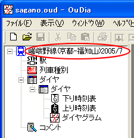

サンプルの『路線ファイル』は、 OuDia インストール先のディレクトリの下の
"sample" ディレクトリにあります（例： "C:\Program Files\OuDia\sample\sagano.oud"
）。
まずは、これを開きます。
１． メニュ[ファイル]→[開く...] を選択してください。
・・・ [ファイルを開く] ダイアログが開きます。
２． [ファイルを開く] ダイアログで、サンプルの『路線ファイル』 "sagano.oud" を選択して[開く]ボタンを押してください。

・・・ ファイルの読み込みに成功すると、『路線ビュー』の一番上のアイコンが [路線] から[嵯峨野線(京都-福知山)2005/7] に変わります。
 エクスプローラー上のファイルアイコン "sagano.oud" をダブルクリックすると、OuDiaが起動し、
"sagano.oud" が開きます。
エクスプローラー上のファイルアイコン "sagano.oud" をダブルクリックすると、OuDiaが起動し、
"sagano.oud" が開きます。
 エクスプローラー上のファイルアイコン "sagano.oud" を、 OuDia
のウインドウにドラッグアンドドロップすることにより、ファイルを開くこともできます。
エクスプローラー上のファイルアイコン "sagano.oud" を、 OuDia
のウインドウにドラッグアンドドロップすることにより、ファイルを開くこともできます。